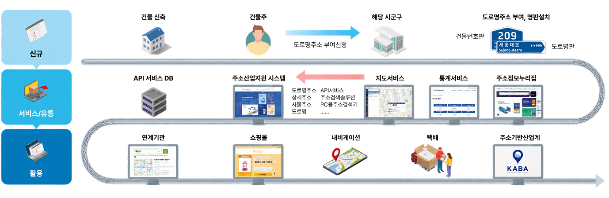
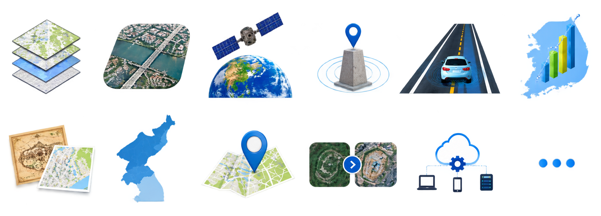

분산 시스템 통합
246개 분산 시스템을
클라우드 기반 통합 환경으로 전환
시스템 운공간정보 기반 시스템과 서비스의 안정적인 운영을 위해 체계적인 유지관리 서비스를 제공합니다.
시스템·데이터 관리와 신속한 장애 대응, 지속적인 기능 개선을 통해 안정적이고 효율적인 운영 환경을 지원합니다.
행정안전부 한국지역정보개발원
24,689 개
주소정보 DB 활용 기관
11.6 만개
연계기관
6.8 천만명
연간 접속자 수
25.9 억건
연간 검색 건수
대한민국 대표 주소정보 서비스를 안정적으로 운영합니다.
도로명주소, 건물번호 등 국가 주소정보를 관리 · 제공하는 주소정보관리시스템을
24시간 안정적으로 운영하며, 대규모 이용환경과 다양한 연계를 지원합니다.

246개 분산 시스템을
클라우드 기반 통합 환경으로 전환
분산된 시스템과 데이터를
통합·표준화하여 운영체계 고도화
대규모 이용환경에서도
안정적이고 신뢰도 높은 서비스 제공
CLOUD
통합 인프라 기반의 안정적인 시스템 운영 및 효율적인 자원 관리
AI
건축도면을 AI로 분석하여
건물정보 자동 생성 및 데이터 구축 지원
DATA & API
다양한 주소정보 데이터와
API를 제공하고 외부 서비스와 연계
INFRA & MONITORING
H/W 127대·S/W 860식 규모의 인프라를 안정적으로 운영하고 실시간 통합관제
국토교통부 국토지리정보원
407 만명
연간 접속자 수
1,195 만건
연간 유통건수
5,578 만건
연간 API호출
대한민국 대표 공간정보 서비스를 안정적으로 운영합니다.
국가가 구축·관리하는 다양한 공간정보를 통합 제공하는 국토정보플랫폼을
안정적으로 운영하며, 공간정보의 검색 · 조회 · 다운로드와 다양한 활용을 지원합니다.
국토지리정보원이 구축·관리하는 다양한 국가 공간정보를 한 곳에서 검색, 조회, 다운로드 할 수 있습니다.

지형·도로·건물·시설물 등
국가 기본 공간정보 제공
국토 항공사진 및 위치·기하
보정 정사영상 제공
위성 촬영 국토영상 및
관련 활용자료 제공
삼각점, 수준점, 통합기준점 등
정보와 GNSS 관측자료 제공
자율주행 등에 활용되는
고정밀 도로정보 제공
인구·사회·국토 통계정보의
공간 기반 조회·분석 제공
고지도 및 과거 지리정보의
공간 연계 제공
북한지역의 지형·지명 등
공간정보 제공
전국 지명과 위치 및
관련 정보 제공
개발·건설 등으로 변화한
국토의 현황을 공간정보로 제공
공공·민간 활용을 위한
국가 공간정보 API 제공
다양한 주제의 국가
공간정보 지속 확대·제공
다양한 국가 공간정보를
표준화하여 통합 제공
공간정보의 다양한 활용을 위한
API 서비스 제공
대규모 이용환경에 대응하는
안정적인 서비스 운영
서비스 품질과 시스템 상태를
체계적으로 관리